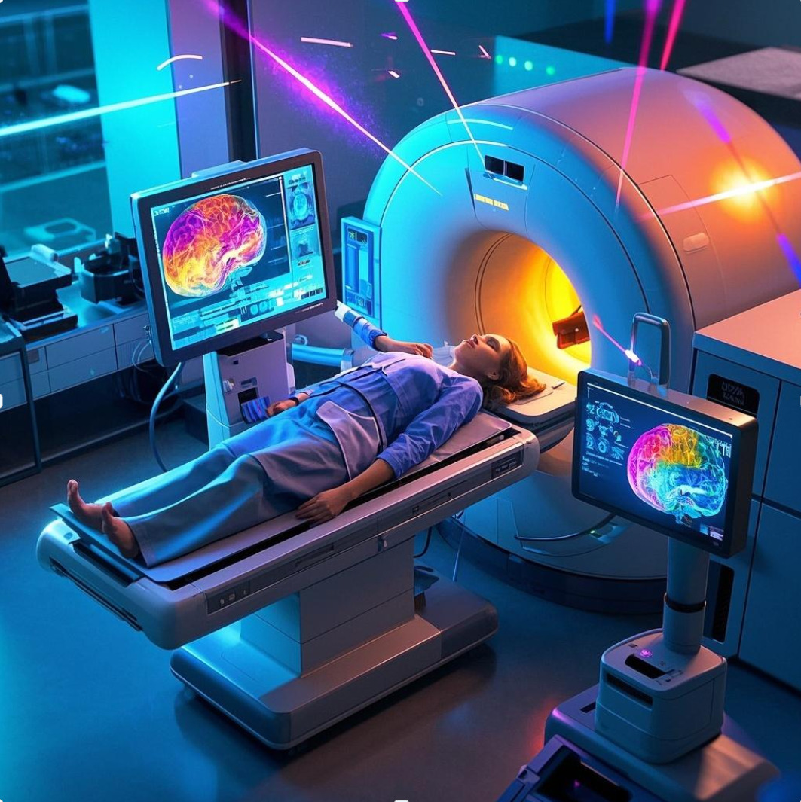
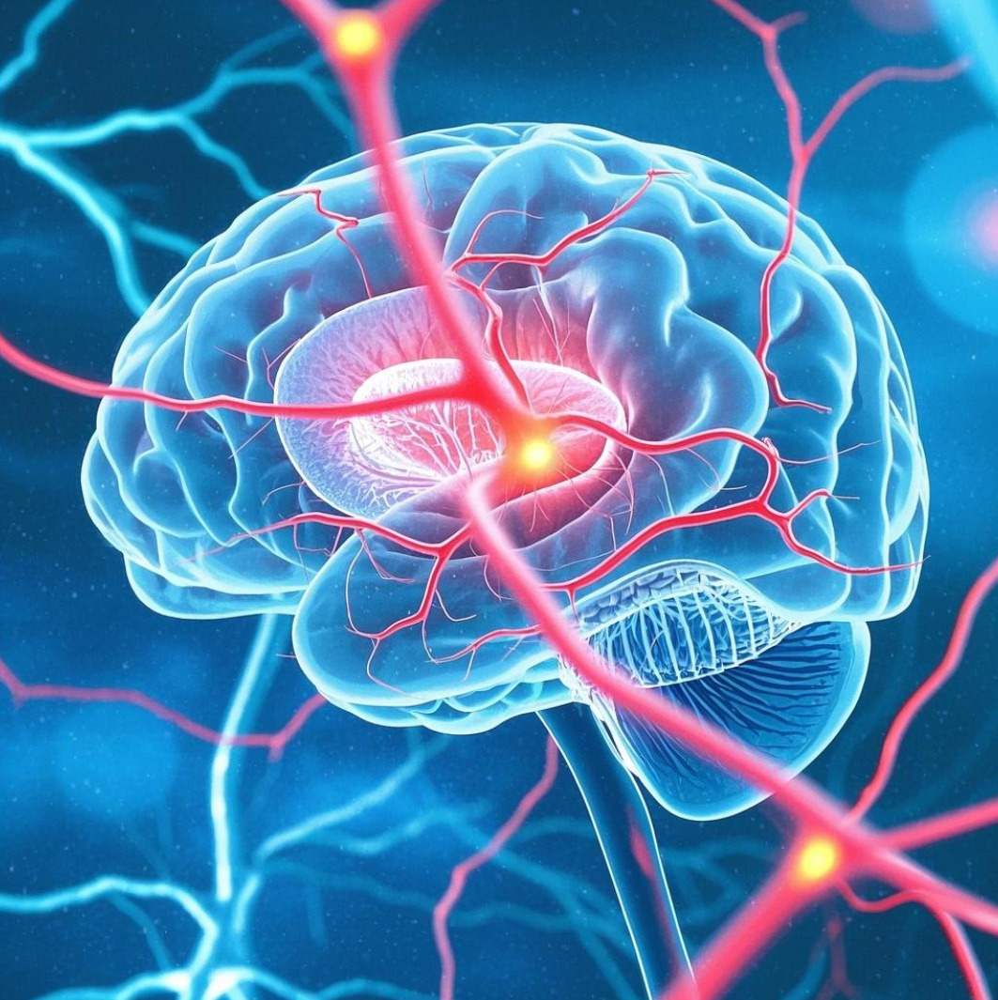
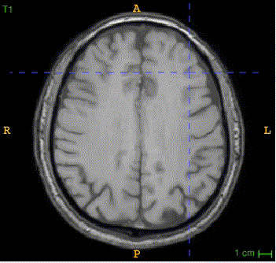
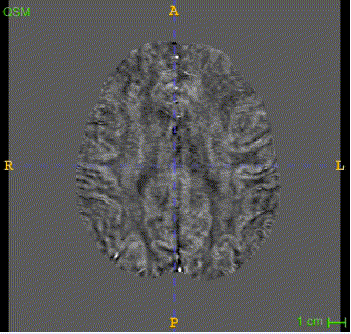
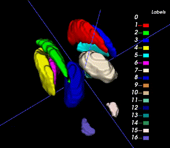
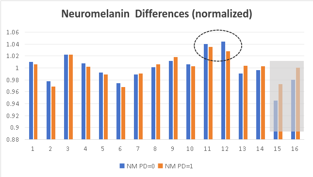
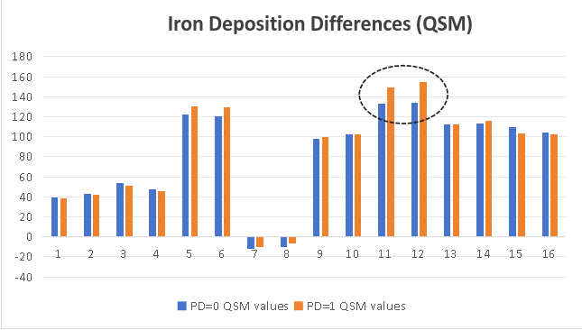

|  |  |
Welcome to the Foundation-Model-Driven Parkinson's Disease Auto Diagnosis Challenge!
The automatic diagnosis of Parkinson's disease (PD) has received significant attention in recent years due to the high prevalence of PD and the need to improve the accuracy of diagnosis. Clinical diagnosis of Parkinson's disease (PD) often leverages diagnostic biomarkers in advanced magnetic resonance imaging (MRI). Quantitative alterations of tissue property in the deep gray matter (DGM) in MRI may indicate pathophysiological changes related to PD. However, automatic and accurate DGM segmentation faces many challenges, and core brain structures (i.e., SNpr and SNpe) for PD determination are particularly difficult to delineate. The lack of public datasets and quality annotations for PD research has been the bottleneck for developing deep learning models of clinical significance. The Ruijin Imaging Neuroscience Group has curated a multi-parametric MRI dataset for PD research with comprehensive annotations. In this challenge, we will provide a large dataset containing 500 subjects with 3 MR modalities (T1WI, QSM, NM-MRI) and bilateral DGM (CN, PUT, GP, STN, SN, RN, and DN) mask annotations. The challenge participants will compete in the DGM segmentation and PD diagnosis tasks. Publicly accessible foundation models and domain adaption techniques should be utilized to tackle the challenging PD diagnosis tasks while facing limitations in data scale and annotation. Specifically, two competition tracks are designed: (1) maximize the accuracy of the DGM segmentation using released data and public foundation models (2) maximize the accuracy of PD classification using released data and public foundation models.
Challenge Highlights
High Quality Parkinson's Disease MRIs
500 samples, with 16 anatomical structures
Quantitative Susceptibility Mapping (QSM)
Neuromelanin-sensitive MRI
Detailed segmentation masks
Foundation Model Driven
Encourage public foundation models
Knowledge distillation, transfer learning
Multimodal fusion and recognition
MICCAI 2025 Challenge
Opportunity to involve in top journal publications
Winners to orally present in MICCAI workshop
Monetary Rewards for both tracks
Abstract
The automatic diagnosis of Parkinson’s disease (PD) has received significant attention in recent years due to the high prevalence of PD and the need to improve the accuracy of diagnosis. Clinical diagnosis of Parkinson’s disease (PD) often leverages diagnostic biomarkers in advanced magnetic resonance imaging (MRI). Quantitative alterations of tissue property in the deep gray matter (DGM) in MRI may indicate pathophysiological changes related to PD. However, automatic and accurate DGM segmentation faces many challenges, and core brain structures (i.e., SNpr and SNpe) for PD determination are particularly difficult to delineate. The lack of public datasets and quality annotations for PD research has been the bottleneck for developing deep learning models of clinical significance. The Ruijin Imaging Neuroscience Group has curated a multi-parametric MRI dataset for PD research with comprehensive annotations. In this challenge, we will provide a large dataset containing 500 subjects with 3 MR modalities (T1WI, QSM, NM-MRI) and bilateral DGM (CN, PUT, GP, STN, SN, RN, and DN) mask annotations. The challenge participants will compete in the DGM segmentation and PD diagnosis tasks. Publicly accessible foundation models and domain adaption techniques should be utilized to tackle the challenging PD diagnosis tasks while facing limitations in data scale and annotation. Specifically, two competition tracks are designed: (1) maximize the accuracy of the DGM segmentation using released data and public foundation models (2) maximize the accuracy of PD classification using released data and public foundation models.
Data overview
Data Annotation
Annotation for the deep brain nuclei structures: One neuroradiologist manually segmented the CN, GP, PUT, SN, RN, and DN in the bilateral hemisphere. Another radiologist with 5 years of experience in neuroimaging double-checked all the structural boundaries. Finally, those ROIs approved by these two radiologists will serve as the ground truth for the segmentation model.
Annotation for the SN, STN structures: The ROIs for the NM-rich region (SNpc, SN) were manually traced by a single rater on MTC magnitude images and QSM maps using SPIN software (SpinTech, Inc., Bingham Farms, MI). The NM-based SN boundaries were traced from the last caudal slice for three to five slices until the NM-rich region was no longer visible. Simultaneously, the iron-based SN boundaries were traced starting from one slice below the most cranial slice where the STN was visible and continued for four to six consecutive slices to the most caudal slice. The STN ROIs were traced from the top of the RN for two slices cranially. For all the ROIs, a dynamic programming approach (DPA) was used to determine the final boundaries to alleviate the subjective bias. All these boundaries were then reviewed by a second rater and modified accordingly in consensus with the first rater.
Sample image and annotation masks for DGM segmentation. The spatial variations of DGM structures are shown in different slices of the T1WI MRI and QSM MRI respectively. The enlarged 3D mask on the top right corner demonstrates the volume differences among DGM structures. Each DGM structure has the left and right regions, colored separately. Sample image and annotation masks for SNpc segmentation. The substantia nigra structure is partially seen in QSM MRI, partially seen in NM MRI, and the intersection area is the SNpc region.
Dataset Split
The Ruijin-PD dataset includes 500 multi-parametric MRI cases (50% each for PD positives and healthy controls) with more than 105,000 images in total. Each case contains the T1WI, QSM, and NM-MRI images, with segmentation masks on 7 PD-related anatomical structures. The PD classification label is also included. The images for training (200 cases, with labels) and validation (100 cases, without labels) will be freely available at the competition start date, while the testing images (200 cases) will be available at the test stage (together with the labels for the validation set). The label for the test set will not be released. All the data and ground truth have not been previously published and have been kept confidential.
The data splitting is based on the cross-validation principle, for maximum randomness and reliability. The split proportion ensures adequate training samples and meaningful testing scores.
Novelty of the challenge
This challenge learns and extends from the previous competition we hosted at Neurips 2023 by pursuing a more detailed technical perspective of foundation model and transfer learning (i.e., model adaptation effectiveness with various data amounts) with a completely new and important clinical application setting (i.e., more clinic-focused tasks). It aims to investigate further how to utilize the power of foundation models to ease the effort of obtaining quality annotations and improve downstream clinical application accuracy. It aligns with the recent trend and success of building foundation models for various downstream applications. The proposed model adaptation paradigm differs from the standard few-shot learning from a methodology perspective. While it is true that the adaptation of foundation models could require a similar amount of data as conventional fine-tuning/few-shot methods, the fundamental technical routine is different. Our challenge focuses more on evaluating the effectiveness of these domain-adaptation approaches in the context of PD diagnosis. Quality data is often scarce in such specific domains, and developing high-quality models with limited sample cases is crucial for accurate diagnosis, which indeed is clinically more relevant and meaningful.
Task description and application scenarios
Parkinson’s disease (PD) is a progressive neurodegenerative disorder characterized by neuromelanin (NM) loss in the substantia nigra pars compacta (SNpc) and iron deposition increase in the substantia nigra (SN). Degeneration of the SN becomes obvious when it reaches a 50% to 70% loss of pigmented neurons in the ventral lateral tier of the SNpc. Iron deposition and volume changes of the other deep gray matter (DGM), including the red nucleus (RN), dentate nucleus (DN), and subthalamic nucleus (STN), are also associated with disease progression. Further, the STN serves as an important target for deep brain stimulation treatment in advanced PD patients. Therefore, an accurate in-vivo delineation of the SN and other DGM could be essential for a better PD study.
Ethics approval
This study was approved by the institutional ethics committee in Ruijin Hospital, Shanghai Jiao Tong University School of Medicine (No.RJ2022-279). All participants provided written informed consent.
Data insights
Mask Overview
There are two masks for each case, the QSM mask and the Neuro-Melanin mask. There are 16 labeled anatomical structures in the QSM mask, and the NM mask contains only the Substantia Nigra (right and left). The correspondence between nucleus regions and labels are in the following tables (for QSM and NM respectively).
| A | B | C | D | E | F | G | H | |
|---|---|---|---|---|---|---|---|---|
| QSM Labels | 1,2 | 3,4 | 5,6 | 7,8 | 9,10 | 11,12 | 13,14 | 15,16 |
| Nucleus Name | Caudate Nucleus | Putaman | Globus Pallidus | Thalamus | Subthalamic Nucleus | Substantia Nigra | Red Nucleus | Dentate Nucleus |
| A | |
|---|---|
| NM Labels | 1,2 |
| Nucleus Name | Substantia Nigra |
Here is the QSM mask in one sample, with T1-MRI and QSM-MRI scans.
|  |  |  |
Nucleus Statistics
We summarize the average volumes for 16 nucleus regions in QSM mask (train+val data, 300 cases).
| QSM Label | 1 | 2 | 3 | 4 | 5 | 6 | 7 | 8 | 9 | 10 | 11 | 12 | 13 | 14 | 15 | 16 |
|---|---|---|---|---|---|---|---|---|---|---|---|---|---|---|---|---|
| Volume (cm^3) | 3.36 | 2.84 | 3.67 | 3.52 | 1.85 | 2.1 | 4.6 | 4.61 | 0.08 | 0.09 | 0.47 | 0.46 | 0.17 | 0.17 | 0.66 | 0.65 |
We also calculate the average signal intensity for 16 nucleus regions in NM images and QSM images. In the Substantia Nigra of PD patients, neuromelanin content becomes less, and iron deposition is obvious.
|  |  |
Evaluation metrics
Segmentation Task
Combined score calculated from:
- Two modalities: QSM (weight: 60%) and NM (weight: 40%)
- Metrics per region: Dice (70%) and Hausdorff distance (30%)
- Weighted regions: Different weights per brain region
Final score = Sum of all weighted region scores
Classification Task
Scored by prediction accuracy (0/1 labels)
Award policy
- Monetary awards for the Top 3-5 winners in both tracks. Top 1 place: $1000 (1 team), 2nd place: $600 (1-2 teams), 3rd place: $400 (1-3 teams).
- The winners will be invited to submit their groundbreaking solutions (as coauthors) in a summarization paper.
- Student participants in the winning teams will be considered for admission and scholarship in organizers’ institutes
Top performing methods in the DGM segmentation track as well as in the PD segmentation track will be announced publicly, both on the competition website and in the conjunct workshop. We will summarize the challenge results and submit a paper to IEEE TMI or Medical Image Analysis. All members of the participating team qualify as authors.
Submission
The participants should send the method description doc/pdf and predictions (segmentation masks & classification labels) to pdcadxfoundation@163.com during val/test phases.See the detailed submission guidelines
Data Download
PDCADxFoundation Data Release
Available datasets:
- Train/Val set: Images, masks, and labels
- Test set: Images only
Download datasets:
Timeline
[Apr. 1, 2025] Website opens for registration
[Apr. 1, 2025] Release training images & ground truth
[May 1, 2025] Release validation images
[May 1, 2025] Submission system opens for validation
[June 15, 2025] Release validation ground truth
[June 15, 2025] Submission system opens for testing
[Aug. 15, 2025] Release test set images
[Aug. 15, 2025][Aug. 31, 2025] Submission ends (codes, results, technical reports)
[Sep. 1, 2025][Sep. 10, 2025] Release final results of challenge
[Sep. 10, 2025][Sep. 22, 2025] Challenge paper submission deadline
[Sep. 27, 2025] Top-ranking teams report during the MICCAI annual meeting
🔥 Latest Updates 🔥
[Apr. 20, 2025] Update the Segmentation evaluation scripts.
[Apr. 20, 2025] Instructions for Docker installation & testing.
[June. 22, 2025] Release ( RRMediCa ) as PD classification baseline (63% val acc, 62% test acc )
[June. 25, 2025] Release the ( baseline) implementation, covering both segmentation and classification tasks. It also includes a docker creation guide, and prediction requirements.
[Aug. 02, 2025] Release the Val set masks and labels
[Aug. 07, 2025] The Leaderboard is online!
[Aug. 07, 2025] Update the submission instruction
[Aug. 11, 2025] The Validation Ranking is online!
[Aug. 12, 2025] Release the test images in the download section.
[Aug. 12, 2025] See updated scoring criteria and submission guidelines on the Submission page.
[Aug. 23, 2025] The Test Ranking is online!
[Sept. 1, 2025] Top-6 teams (in both segmentation/classification tasks) notified for Docker submission.
[Sept. 9, 2025] Docker submissions from prize-winning teams successfully verified. Congratulations to all winners! 8 Teams will share $6800!
Contact
Email: PDCADxFoundation@163.com